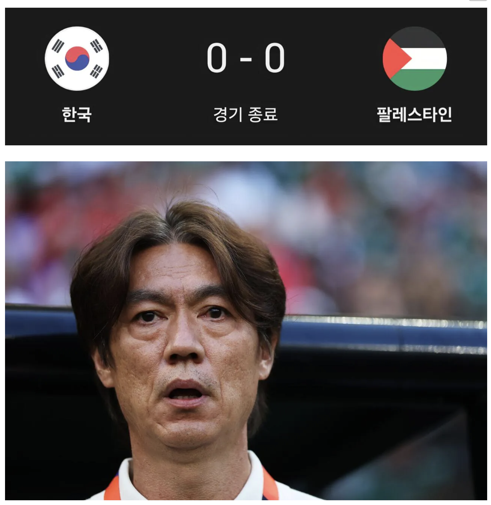

34 · 8 · 1 시간 전 · 원문

수집 당시 댓글 8개
wenjsvnkl · 10 시간 전
? 짤방에 경기력 좋은거밖에 안보이는데 억까 모지?
템페스트 · 10 시간 전
맞네 첫 경기 경기력 좋았네
호선출근중 · 10 시간 전
엄대엄이였으면 진짜 좋았네
윌리스캐리어 · 10 시간 전
그린라이트 · 10 시간 전
왜용 · 1 시간 전
한골도 안먹히다니 대단하네 씨발
아졸려 · 1 시간 전
쟨 진짜 곱게는 안 죽었으면 좋겠다
고독한사냥꾼 · 46 분 전


? 짤방에 경기력 좋은거밖에 안보이는데 억까 모지?